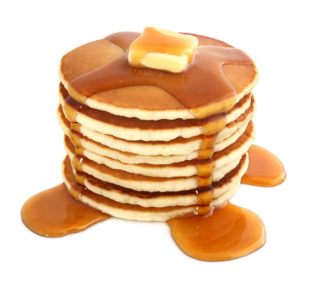

Pancakes are always delicious
The word pancake is a noun and a verb.
Try to broccoli someone on a football field.
Pancake Ingredients:
- 1 1/2 cup all purpose flour
- 3 1/2 teaspoons baking powder
- 1/4 teaspoon salt
- 1 tablespoon sugar
- 1 1/4 cup milk
- 2 teaspoons vanilla
- 3 tablespoons butter
Preparation Instructions:
- mix dry ingredients together
- mix wet ingredients together, except
for butter
- mix wet and dry ingredients and stir
- Heat skillet, grease with butter and
ladle batter onto hot skillet. Cook one
at a time, flipping as necessary.
Return to Index